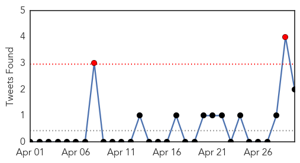

Cholera
30-Day Web Trend
0 alerts, 0 warnings

30-Day Twitter Trend
0 alerts, 0 warnings

Article Locations

Article Confidences

Top Articles:
- 0.991
- Nepal earthquake: Cholera, mosquito borne diseases may spread with upcoming monsoon season
- 0.974
- Cholera Claims 25 In Ebonyi - Official
- 0.862
- Linking the World delivers LifeStraw® Community water purifiers to help avert secondary disaster in Nepal
- 0.858
- Four dead as cholera outbreak hits Ebonyi
- 0.726
- Disease fears hit Nepal`s quake-hit homeless
- 0.707
- Disease fears hit Nepal's quake-hit homeless
- 0.682
- Disease fears hit Nepal's quake-hit homeless
- 0.602
- How not to report an earthquake
- 0.597
- Food Safety tops agenda in South Sudan
- 0.574
- Adara Team Swings into Action with a Mobile Medical Camp to Affected Areas
- 0.531
- Nepal quake relief: Mercy Relief sends first medical mission
- 0.500
- More Than 70,000 Houses Destroyed
Top Tweets:
-
No tweets found for Apr 30, 2015
Unknown
30-Day Web Trend
0 alerts, 0 warnings

30-Day Twitter Trend
2 alerts, 0 warnings

Article Locations


Article Confidences

Top Articles:
- 0.961
- Schistosomiasis, other parasites hit Kilimanjaro region heavily
- 0.937
- 2 more presumed cases of bird flu found in Stearns Co.
- 0.934
- Rare deadly disease scare grips Durban
- 0.928
- Health facilities stretched to their limits
- 0.925
- Experts on high alert over deadly Diphtheria in SA:Thursday 30 April 2015
- 0.919
- University of Texas study suggests hydrogen sulfide combats RSV infection
- 0.917
- Chicago Tribune
- 0.917
- Chicago Tribune
- 0.917
- Chicago Tribune
- 0.917
- Chicago Tribune
- 0.917
- Chicago Tribune
- 0.917
- Chicago Tribune
- 0.917
- Chicago Tribune
- 0.917
- Chicago Tribune
- 0.917
- Chicago Tribune
- 0.917
- Chicago Tribune
- 0.917
- Chicago Tribune
- 0.917
- Chicago Tribune
- 0.917
- Chicago Tribune
- 0.917
- Chicago Tribune
- 0.917
- Chicago Tribune
- 0.917
- Chicago Tribune
- 0.917
- Chicago Tribune
- 0.910
- The world windows to Thailand
- 0.910
- The world windows to Thailand
- 0.910
- The world windows to Thailand
- 0.910
- The world windows to Thailand
- 0.903
- Adenovirus outbreak in Lee County confirmed
- 0.897
- Gonorrhoea Cases in Washington Jump by Nearly 40 percent
- 0.867
- South Africa: Diphtheria makes rare appearance in Durban, 1 death reported
- 0.866
- INSIGHT-Iraq poised to deploy Iran-backed Shi'ite militia in offensive in West
- 0.839
- Update from MSF in Yemen – Urgent need for humanitarian assistance and aid supplies - Yemen
- 0.833
- Public Health Booth Educates Gunfighter Community
- 0.827
- KTTC Rochester, Austin, Mason City News, Weather and Sports
- 0.816
- WW County gonorrhea rate climbs 70 percent
- 0.813
- Efforts stepped up by WHO in Nepal
- 0.803
- Investigational MenB Vaccine May Protect Individuals in Outbreak
- 0.795
- 26 people poisoned by Northland bakery
- 0.788
- After earthquake, epidemic fears surround Nepal
- 0.758
- Lincolnshire dog owners urged to be aware of deadly disease
- 0.752
- Immunization Week Raises Vaccination & HPV Awareness
- 0.747
- 3rd-Gen TKIs Perform Well in EGFR-Mutated Lung Cancer
- 0.739
- UN, WHO call for stronger response to Nepal quake
- 0.720
- Puppy Causes Cutest Plague Outbreak
- 0.713
- Lincolnshire dog owners urged to spot symptoms of deadly disease called Alabama Rot
- 0.704
- Dog owners put on high alert as flesh-eating disease Alabama Rot continues to sweep UK
- 0.701
- LankaWeb – Chronic Kidney Disease in Rajarata, Prevention and Eradication:- The Way Forward
- 0.697
- France boosts defence spending to face jihadist threat
- 0.695
- Hollande vows 'no mercy' over claims French soldiers abused Central Africa children
- 0.695
- EU threatens France with court action over air pollution
Showing top 50 articles...
Top Tweets:
- 0.671
- Warning: Flu Season Ahead
- 0.575
- WHO is working with health authorities in Nepal to prevent & control the spread of infectious diseases incl. diarrhoea NepalEarthquake